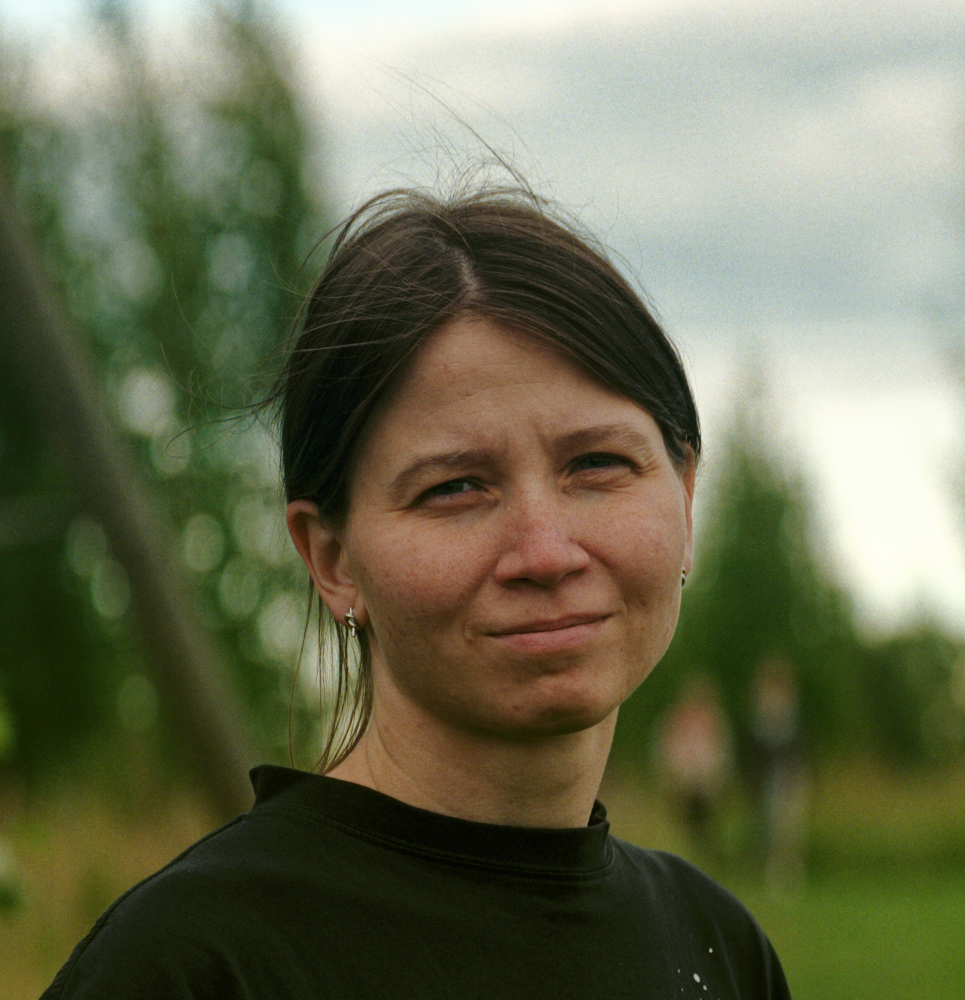

| PARTICIPANTS | QUESTIONNAIRE | MATERIALS | TALKS | PUBLICATIONS | CONTACTS |
| Participants | |
|---|---|

|
Anton Zimmerling Project leader Pushkin State Russian Language Institute/Institute of Linguistics of the Russian Academy of Sciences ORCID: 0000-0002-5996-2648 ResearcherID: R-3342-2016 Scopus AuthorID: 56200095000 Research area in the project: Syntactic typology, Russian grammar, Germanic languages |

|
Elena Yu. Ivanova Principal researcher Saint-Petersburg State University/Pushkin State Russian Language Institute ORCID: 0000-0002-1604-0088 ResearcherID: D-8060-2014 Scopus AuthorID: 56496302100 Research area in the project: Bulgarian language, South Slavic languages, small clauses, external possessor, complementation strategies, polypredication, semantic syntax, typology of predicates |

|
Galina Kustova Principal researcher Vinogradov Institute of the Russian Language of the Russian Academy of Sciences/Pushkin State Russian Language Institute ORCID: 0000-0001-9404-081X ResearcherID: N-9024-2014 Scopus AuthorID: 56291947100 Research area in the project: grammatical semantics, semantics-to-syntax |
|  |
Sofya Oskolskaya Lead researcher Research School of Higher Economics/Pushkin State Russian Language Institute SPIN РИНЦ: 4268-6750 ORCID: 0000-0001-8658-2133 ResearcherID: P-4529-2015 Scopus AuthorID: 57191727928 Research area in the project: Nanai language, Tungus-Manchu languages, constructions with sentential actant, polypredicative constructions, indexical shift |

|
Valentin Gusev Lead researcher Institute of Linguistics of the Russian Academy of Sciences/Pushkin State Russian Language Institute SPIN РИНЦ: 2128-8120 ORCID: 0009-0004-3729-5807 ResearcherID: G-9499-2018 Scopus AuthorID: 57198810867 Research area in the project: Nganasan language, Samoyedic languages, imperative zone constructions, corpora of small languages |

|
Alexandra Baiuk (Ivoylova) Researcher Pushkin State Russian Language Institute ORCID: 0009-0002-6721-0005 Scopus AuthorID: 57447022900 Research area in the project: annotated corpora creation, automatic linguistic tagging, scientific programming |

|
Julia V. Sinitsyna Researcher Pushkin State Russian Language Institute/Lomonosov Moscow State University SPIN РИНЦ: 2597-3250 ORCID: 0000-0002-2408-6270 ResearcherID: HGD-5556-2022 Scopus AuthorID: 57559885700 Research area in the project: Udmurt language, Finno-Ugric languages, polypredication, predicates with the meaning 'to seem' |

|
Ivan V. Kalyakin Junior researcher Russian State University for the Humanities/Pushkin State Russian Language Institute SPIN РИНЦ: 9047-0060 ORCID: 0009-0002-8809-8913 ResearcherID: ITW-1227-2023 Scopus AuthorID: 58452221400 Research area in the project: Nakh-Dagestani languages, Dargin languages, polypredication, distant agreement, restructuring, complex predication |

|
Pavel Astafyev Engineer Pushkin State Russian Language Institute ORCID: 0009-0009-7305-6252 Research area in the project: Abkhaz-Adyghe languages, anaphora, licensing of pronouns across clause boundaries |

|
Daria Paramonova Engineer Pushkin State Russian Language Institute/Lomonosov Moscow State University SPIN РИНЦ: 3166-5815 Research area in the project: Turkic languages, North Caucasian languages, structural asymmetry |
Pushkin State Russian Language Institute
RSF Grant No. 25-18-00222